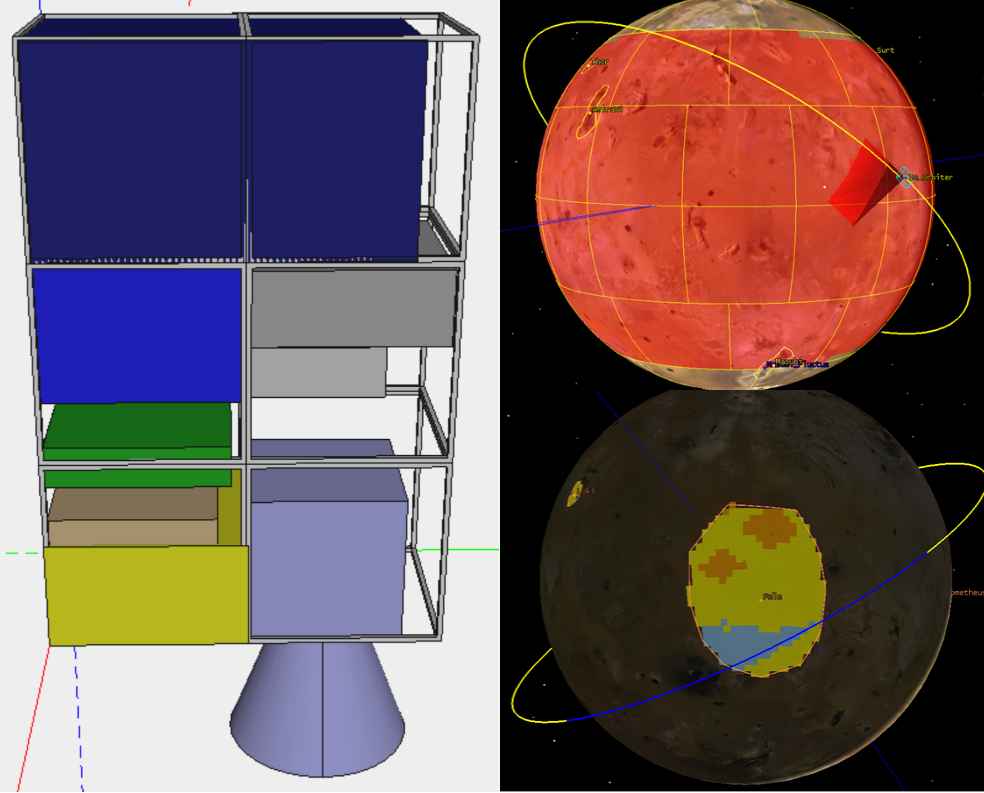
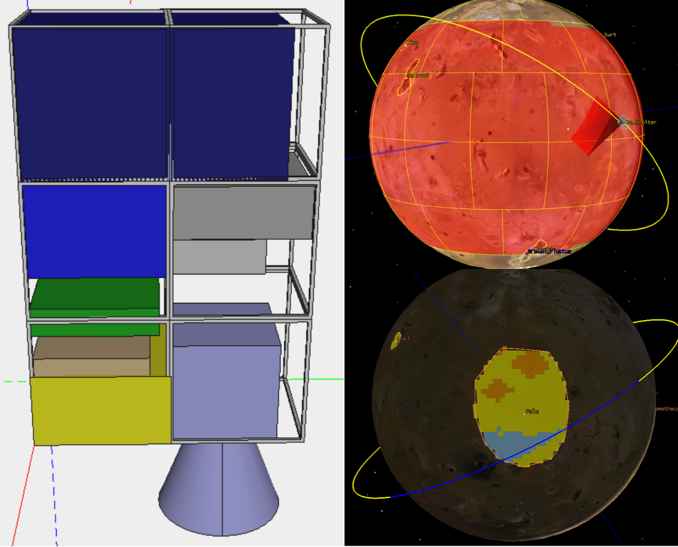
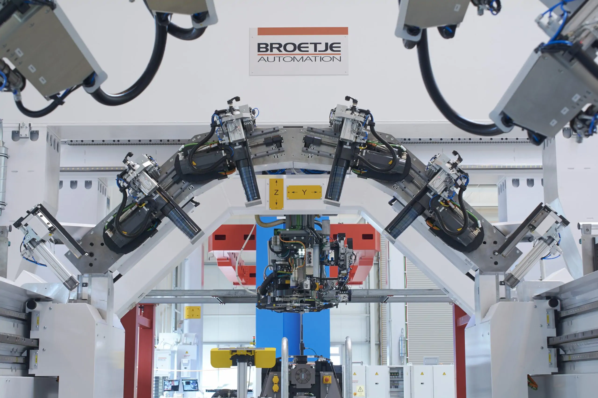
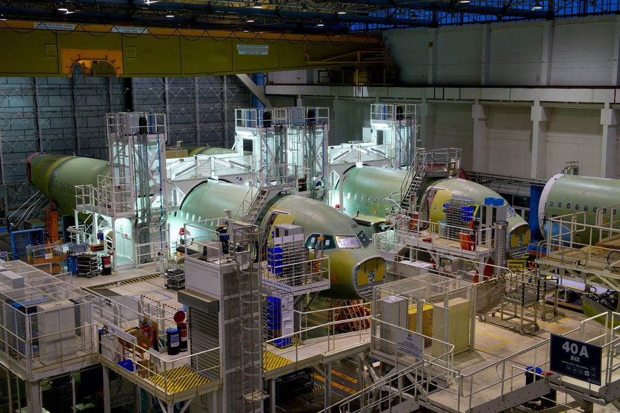
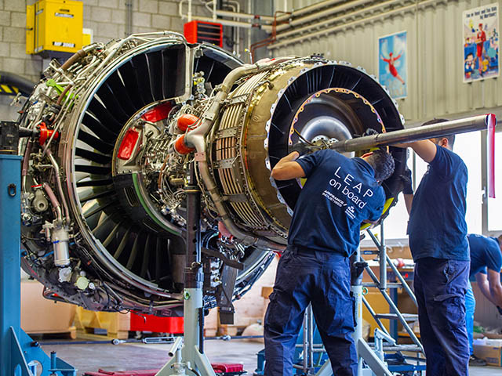

Je suis diplômé de l'IPSA avec un double diplôme en ingénierie des systèmes aérospatiaux et Newspace de l'Université Paris-Saclay.
Passionné par l'innovation technologique et l'exploration spatiale, j'aspire à contribuer à l'avancement des technologies spatiales en tant qu'ingénieur de recherche.
Découvrez mon parcours, mes projets et ma vision de l'avenir ici.
 

Conception d'un CubeSat 6U pour la mission SIMPLEx, visant à envoyer le CubeSat en orbite autour de Io, l'une des lunes de Jupiter, afin d'observer son évolution. Ce projet s'est concentré sur la conception de satellites, l'intégration de charges utiles et la planification de missions d'observation planétaire.

Développement d'un CubeSat 2U conçu pour des opérations d'amarrage dans l'espace. Le projet comprenait la conception structurelle, l'intégration des systèmes et l'exécution de la mission pour l'amarrage autonome.

Développement d'un programme C++ pour contrôler des robots résolvant des labyrinthes de manière autonome. Ce projet comprenait la programmation d'algorithmes pour la recherche de chemin et la navigation dans des environnements complexes.

Association project at Itech: development of an assistance robot for the ISS, capable of moving on rails and manipulating objects to limit astronauts' movements. Project stopped at the prototyping stage.

Stage de fin d’études au LATMOS, je travail sur la simulation expérimentale de l’atmosphère de Jupiter via le réacteur PAMPRE, production et caractérisation d’aérosols (tholins), développement d’outils d’analyse en Python, et préparation d’un article scientifique.

J'ai travaillé sur des systèmes LIDAR pour la recherche spatiale lors d'un stage SIMO à l'OHP. L'accent a été mis sur l'application de la technologie LIDAR aux études atmosphériques et à la télédétection.

Aide à la gestion de projets liés à l'automatisation de l'assemblage d'aéronefs. Ce rôle consistait à superviser les délais, les ressources et la coordination entre les équipes.

A contribué à la fabrication des avions et à l'intégration des systèmes lors d'un stage chez Airbus. Cette expérience a consisté en un travail pratique sur les systèmes et les composants des avions.

Soutien aux opérations de maintenance des moteurs d'avion à Orly Industrie. Le rôle consistait à diagnostiquer, dépanner et aider à réparer les moteurs d'aviation.